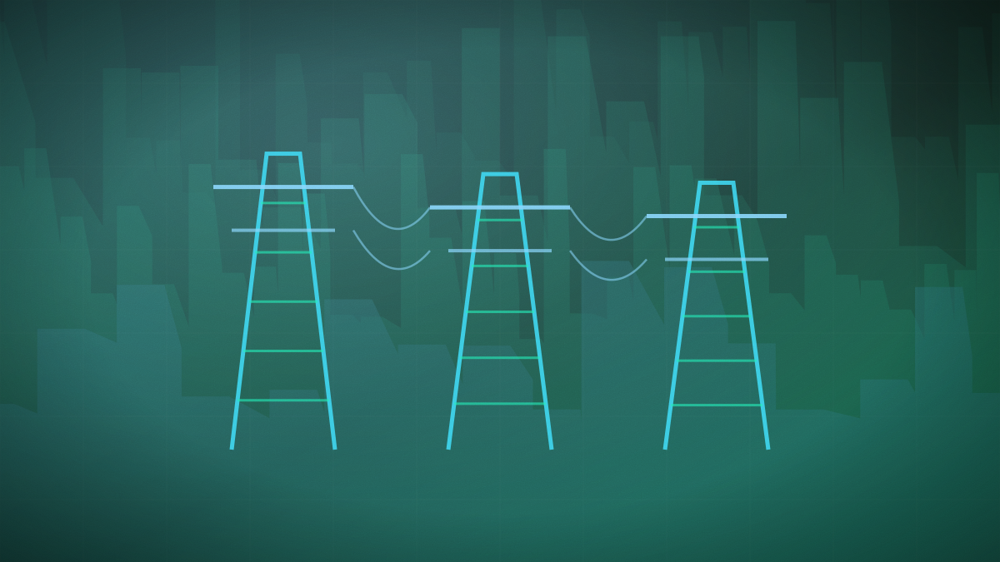

Starcloud raises $250m for orbital data centres as launch capacity tightens
The round values the 25-person company at $2.3bn, with Nvidia putting in $25m — and its chief executive naming Falcon 9's 2028 retirement as the binding constraint.

Original cover art, generated for this story. THE VISSION does not republish third-party press imagery.
- Starcloud raised a $250m extension to its March Series A, taking that round to $420m in total and valuing the company at $2.3bn.
- Manhattan West Ventures led, with Nvidia contributing $25m alongside Cisco, Benchmark, EQT, NFX and others.
- The company runs Nvidia H100 GPUs in orbit and is building 8 kW Starcloud-2 compute satellites for rideshare launches in 2027.
- Chief executive Philip Johnston said launch is "pretty constrained right now" because SpaceX's Falcon 9 programme is scheduled to end in 2028.
Starcloud has raised a $250m extension to the $170m Series A it closed in March, valuing the Woodinville, Washington company at $2.3bn. Manhattan West Ventures led the round, with Nvidia investing $25m alongside Cisco, Benchmark, EQT, Soma, NFX, 776, Cedar Capital, Goanna Capital and Standard Capital. The company employs 25 people.
Starcloud builds AI inference satellites, and already operates Nvidia H100 GPUs in orbit. Its production focus is Starcloud-2, an 8 kW compute satellite intended for rideshare launches in 2027, with a larger Starcloud-3 spacecraft designed for SpaceX's Starship. Nvidia's Vera Rubin Space-1 chip is slated for deployment in late 2028. The company has asked the FCC for authorisation covering 88,000 spacecraft operations.
The constraint the raise is meant to address is not demand or silicon but rides to orbit. "Launch is pretty constrained right now because [SpaceX's] Falcon 9 program is scheduled to end in 2028," chief executive Philip Johnston told TechCrunch — a retirement that removes the workhorse vehicle before its replacements are reliably available, which is an awkward window for a company whose product only works once it is above the atmosphere.
Orbital data centres are usually pitched on power and cooling economics, and this round quietly reframes the bottleneck as logistics: the scarce input is launch slots, not capital or chips. That makes Starcloud's valuation partly a bet on the launch market of 2027–28 rather than purely on compute demand, and it explains Nvidia's participation — a customer for orbital GPUs is also a customer for the chips whether or not the orbital thesis works out.